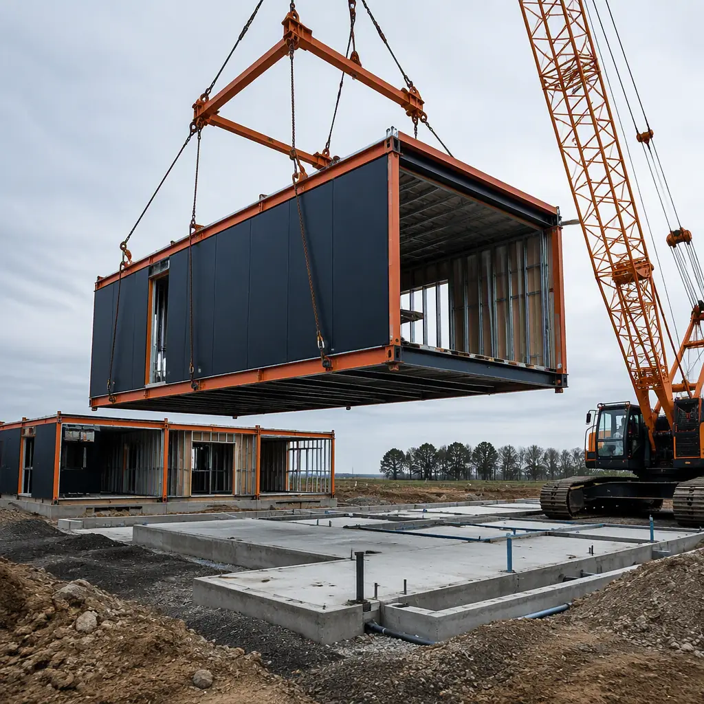
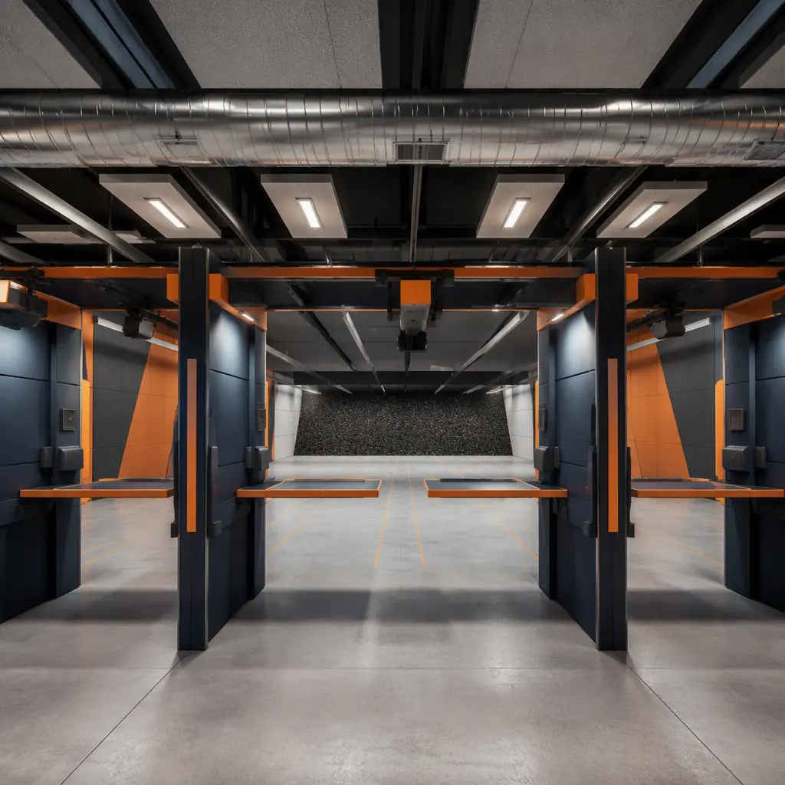
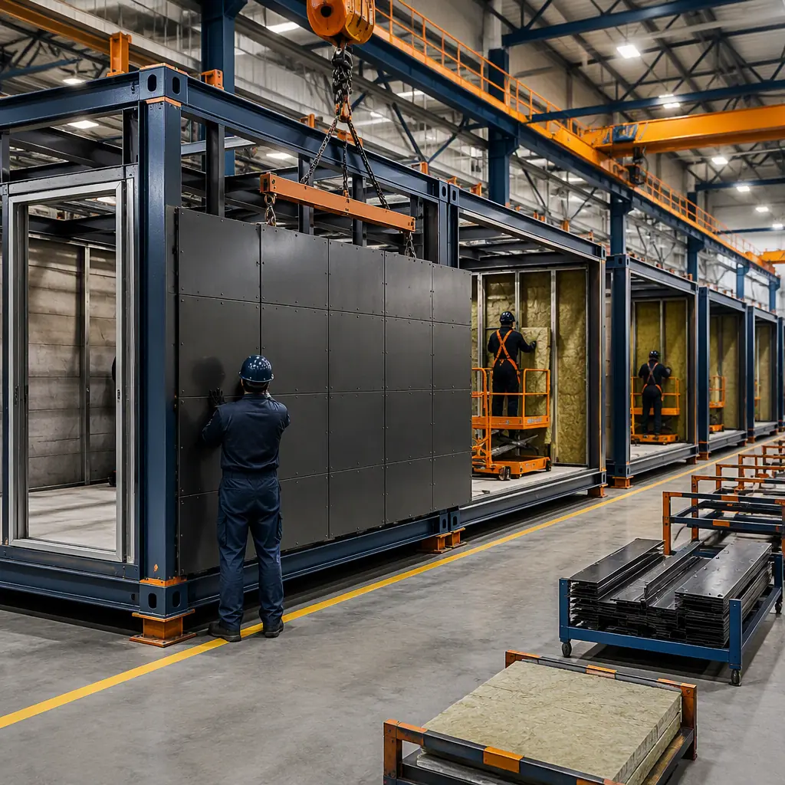

An indoor shooting range is one of the most technically demanding building types in commercial construction, because it has to do three contradictory jobs at once: stop bullets cold, keep shooters and staff safe from lead exposure, and contain a 160 dB muzzle blast inside four walls without disturbing the neighbors. The United States has an estimated 16,000+ commercial, law enforcement, and military ranges, and demand for indoor capacity keeps growing — driven by year-round training demand, urban land constraints, and the expansion of law enforcement and private firearms training programs. Yet most indoor ranges are still delivered as site-built buildings with 12–18 month schedules, because the ballistic walls, lead-management ventilation, and acoustic treatment are layered on by separate specialty contractors in a long sequential chain. Modular construction collapses that to a 16–20 week factory production cycle with a 2–3 week site set, because the ballistic containment, ventilation, and acoustic systems are engineered into the modules and installed in the factory where they can be tested — not improvised in the field. This guide explains the indoor range building program, how factory-built construction satisfies ballistic, environmental, and acoustic requirements, and what developers and agencies should know before they build.

Why Range Developers and Agencies Are Going Modular
Three factors make modular delivery a strong fit for indoor ranges. First, the building is defined by its systems, not its layout: once the lane count, caliber, and distance are set, the ballistic, ventilation, and acoustic packages are nearly identical from project to project, and repetition is what factory production does best. Second, the schedule is commercially critical — a range's revenue model depends on lane hours, and every month of construction delay is a month of membership and training revenue that never comes back. Third, the inspection risk is concentrated: ranges fail inspections on lead ventilation and ballistic integrity far more often than on any other system, and both are dramatically more reliable when factory-installed and pre-tested than when assembled by multiple site trades. The quality-gate discipline that makes factory testing reliable — documented inspections at every stage of production — is the same system MODURA applies across all building types, covered in our factory quality control guide.
Range developers also face a permitting environment that punishes schedule uncertainty: noise studies, zoning approvals, and lead-management plans can expire while a conventional building creeps toward completion. A committed factory schedule keeps those approvals alive. The structural foundation for these buildings — steel frames engineered for heavy concentrated loads — is the same logic MODURA applies to industrial buildings, detailed in our modular heavy industrial construction guide.
The Range Building Program: Lanes, Distances, and Ballistic Containment
An indoor range is a long, narrow building with a tightly specified interior. The standard program for a commercial facility breaks down as follows:
- Lanes (the core product). Commercial ranges typically run 8–24 lanes at 4–6 ft centers, with distances of 25 yards (pistol), 50 yards (carbine), or 100 yards (rifle) — a 25-yard, 10-lane range needs roughly 100–110 ft of building length plus the impact area and shooter support spaces.
- Ballistic containment (the non-negotiable). The impact berm and side walls must stop the maximum caliber the range is rated for. Modern containment uses AR500 ballistic steel plate (3/8–1/2 in) backed by rubber granulate or laminated bullet traps at the impact wall, with side containment rated to the same caliber — no ricochet paths, no gaps at any shooting angle.
- Ventilation and lead management (20–30% of project cost). A dedicated air system that moves air downrange at 0.6–0.75 m/s, exhausts 100% to the outside (no recirculation), and filters lead particulate before discharge.
- Acoustic package. Double-wall construction, sound-absorbing panels on walls and ceiling, and baffles spaced every 20–30 ft down the range to break muzzle blast propagation — targeting a 45–60 dB reduction from firing line to property line.
- Shooter and support spaces. Firing line with lane partitions, retail counter, rental and cleaning stations, classrooms for training, and secure storage — arranged so circulation never crosses the firing line.
Every element maps onto factory production. Ballistic panels are installed and verified in the factory, ventilation ducting is pre-fitted and air-balanced before shipment, and the acoustic package is factory-installed rather than field-applied. For the steel-frame engineering that carries these heavy systems — tolerances, connections, and load paths — our modular steel construction guide covers the structural foundation.

Lead Management and Ventilation: OSHA and ANSI/SAAMI Compliance
Lead is the defining environmental issue for indoor ranges, and the ventilation system is the building's most important safety system. Every round fired releases lead particulate and vapor, and without engineered airflow those particles accumulate in shooter and staff breathing zones. OSHA sets a permissible exposure limit of 50 micrograms per cubic meter (8-hour time-weighted average) for airborne lead, with action levels that trigger monitoring and medical surveillance, and the range design standard ANSI/SAAMI Z299.1 prescribes the mechanical solution: continuous airflow from the firing line downrange at 0.6–0.75 m/s (roughly 120–150 feet per minute), 100% outdoor air with no recirculation, exhaust at the impact area, and filtration of lead particulate before discharge to atmosphere. The firing line must be the cleanest air in the building — air flows from shooters toward the traps, never back toward the line.
Factory-built ranges engineer this in rather than commissioning it in the field. The ducting, fans, and filtration train are installed in the factory and air-balanced to the design velocity before shipment, so the owner receives a ventilation system that has already proven it moves air at 0.7 m/s downrange — not a system waiting for a balance contractor to fix in the field. The same factory-installed approach applies to the mechanical systems in any high-performance building, which we cover in our modular HVAC and indoor air quality guide. Lead management does not stop at ventilation: ranges must also follow EPA best management practices for range lead — regular sweep and lead recovery, proper disposal of berm material, and staff hygiene programs — but a factory-engineered air system is what keeps the building itself in compliance.
Acoustics: Containing 160 dB Inside Four Walls
A firearm at the shooter's ear produces 150–170 dB — loud enough to cause permanent hearing damage instantly and to be heard for miles if the building does not contain it. Indoor range acoustics are therefore a double problem: protecting shooters and staff inside, and protecting the neighborhood outside. Inside, the range uses sound-absorbing panels with noise reduction coefficients of 0.85–1.0 on walls and ceiling, plus ceiling baffles every 20–30 ft to break blast propagation down the range. Outside, the building envelope is the barrier: double-wall construction with a damped cavity, mass-loaded wall assemblies, and acoustically rated doors and vents, engineered as a system to deliver the 45–60 dB insertion loss the noise study requires.
This is where modular construction earns its keep, because acoustic performance depends on details that are miserable to get right in the field: continuous sealant lines, no flanking paths through penetrations, door seals that actually seal, and vent silencers matched to the air system. In the factory, those details are built and tested as part of the module; on site, they are done once, at a workstation, with QC sign-off. The acoustic engineering principles — mass, damping, decoupling, and flanking-path control — are the same ones MODURA applies to sound-sensitive buildings of all kinds, documented in our modular acoustics and soundproofing guide.

Factory Production: Ballistic Panels, Pre-Tested Air Systems
The range is built indoors because ballistic and ventilation quality are controlled indoors. Ballistic steel is cut, drilled, and mounted at dedicated stations with torque-controlled fasteners; acoustic panels are installed with sealed joints; and the ventilation train is fitted, powered up, and air-balanced to the design velocity before the module ships. Every connection is documented in the submittal package — the same production-line discipline of weld verification, dimensional checks, and MEP testing at defined gates that MODURA documents in our factory quality control guide. Weather independence matters for range projects too: a range under construction in a cold-weather state does not lose its schedule to frozen concrete or snow, because the building work happens in a climate-controlled factory and the site work is limited to foundation, utilities, and a short set window.
On site, the set is measured in weeks, not seasons: foundations and utilities are prepared in parallel with factory production, and the modules are set, joined, and interconnected over a 2–3 week window, followed by final air balancing, ballistic verification, and the range's safety certification inspection. The full schedule comparison of factory-built versus conventional delivery is in our modular construction timeline analysis.
Cost and Timeline Benchmarks for Indoor Ranges
Indoor range economics are driven by systems cost: the ballistic containment, lead-management ventilation, and acoustic package together account for 35–50% of total project cost, which is why the systems-first approach of modular delivery has such a large impact. For a typical 10-lane, 25-yard commercial range (roughly 10,000–14,000 sq ft including retail and classrooms), modular delivery lands at $180–280 per sq ft complete — or $35,000–60,000 per lane fully built — compared with $240–360 per sq ft for equivalent site-built construction. The 20–30% saving comes from factory labor efficiency, compressed schedule, and the elimination of specialty-contractor coordination risk.
| Benchmark | Site-Built Range | Modular Range |
|---|---|---|
| Design through first shot | 12–18 months | 6–9 months |
| Building cost (10-lane range) | $240–360 / sq ft | $180–280 / sq ft |
| Ventilation / lead system | Field-assembled, balanced on site | Factory-installed, pre-balanced |
| Ballistic containment | Specialty subcontractor, field-verified | Factory-installed, documented per panel |
| On-site set window | N/A (sequential trades) | 2–3 weeks |
| Relocatability | None | Full — re-deployable to a new site |
For law enforcement agencies, the calculus adds training value: a modular range can be delivered while the department's existing facility stays in service, set in a matter of weeks, and relocated or expanded as the agency's training program grows. Agencies should structure procurement around performance — committed opening date, documented ballistic and ventilation testing, guaranteed noise performance — using the framework in our modular RFP and procurement guide. Total lifecycle economics, including the systems that dominate operating cost, are covered in our total cost planning guide, and per-square-foot benchmarks across building types are in our modular construction cost guide.
A shooting range fails on systems, not walls: the ballistic trap, the air moving downrange, and the acoustic envelope. Factory production is the only delivery method where those three systems are built, tested, and documented as one integrated building — before it ever reaches the site.
Compliance, Zoning, and the Business Case
Indoor ranges carry a heavier compliance load than almost any comparable commercial building. The approval chain typically includes: zoning (ranges are often conditional uses requiring public hearings), a noise study demonstrating the acoustic package will meet local sound ordinances, environmental review of the lead-management plan, and building code review of the ballistic and fire-resistance assemblies. A factory-built range helps at every step because the engineering documentation — ballistic ratings, ventilation design velocities, acoustic insertion loss, fire ratings — exists as a complete submittal package from day one, rather than being assembled after construction. The approval sequence for factory-built structures is covered in our permitting and zoning guide, and fire-resistance requirements for the occupancy are covered in our modular fire safety guide.
On the business side, indoor ranges are a durable commercial model: membership, training, and rental revenue compound, and ranges increasingly operate as training businesses rather than lane rentals alone. Law enforcement and defense agencies building training facilities will find the same factory-built delivery that serves their police and law enforcement facilities, with the ballistic and ventilation systems specified to training standards rather than commercial ones. Whichever path applies, the key is to specify the systems first — caliber, lane count, airflow, noise target — and let the factory build the building around them.